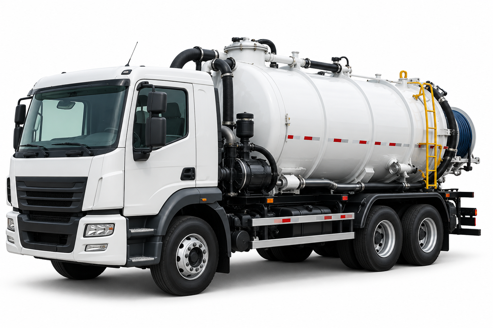
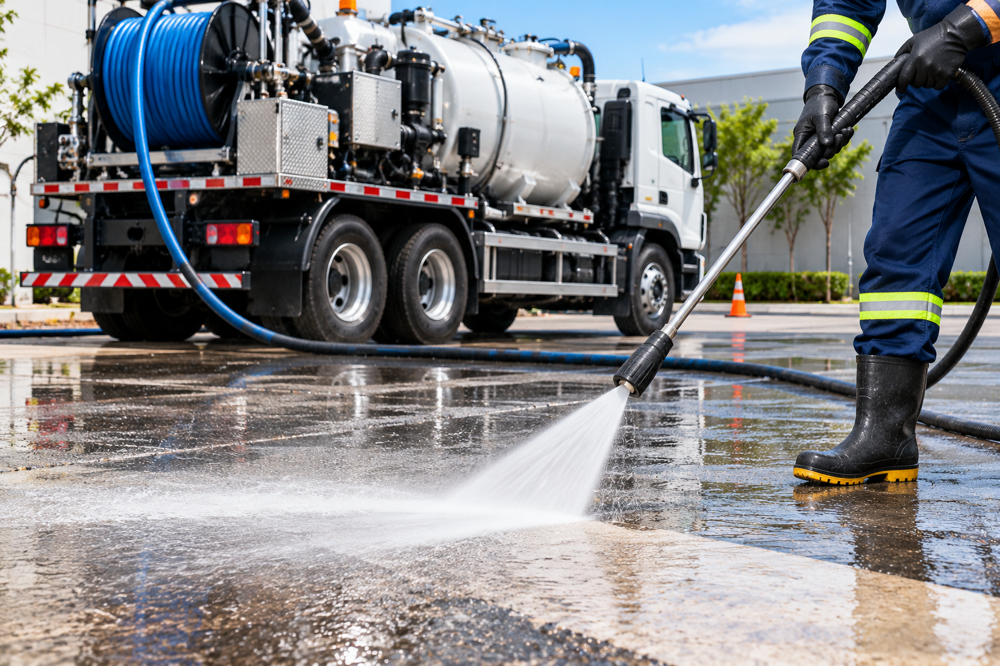
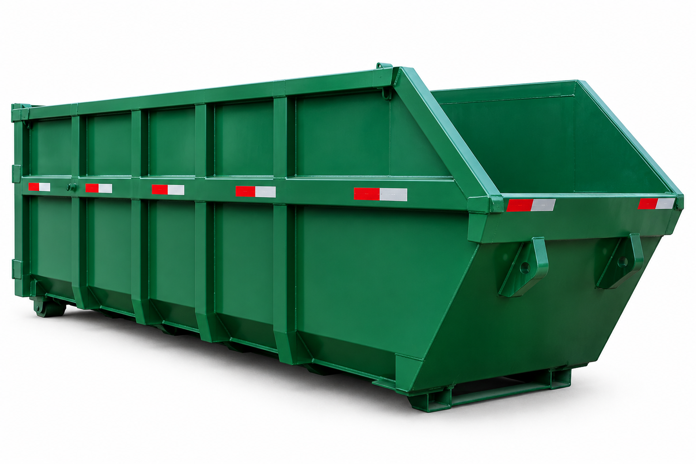
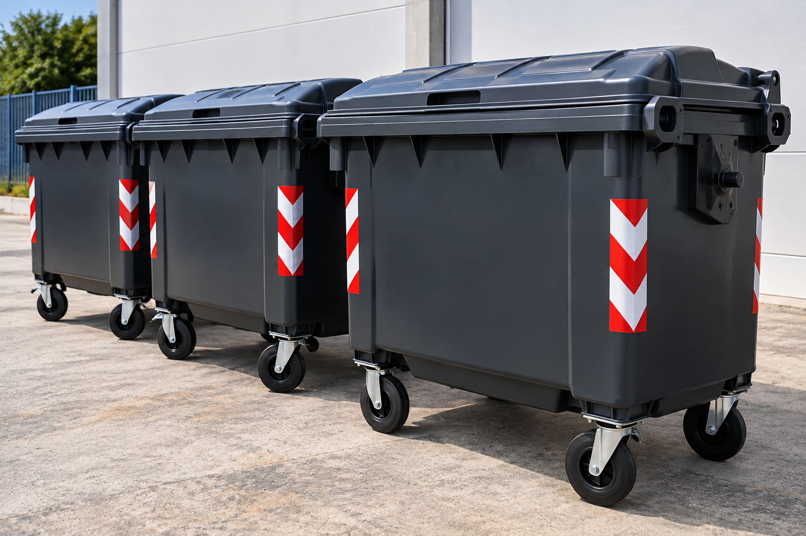
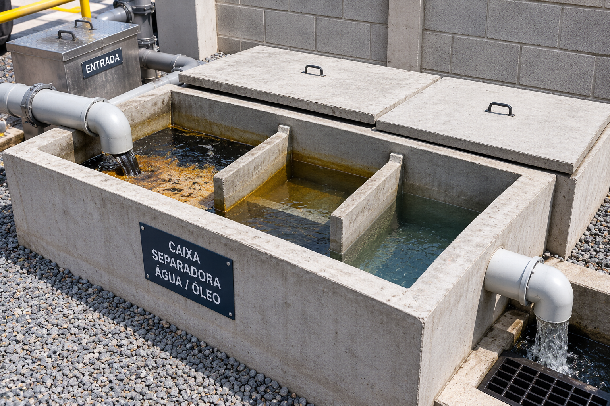
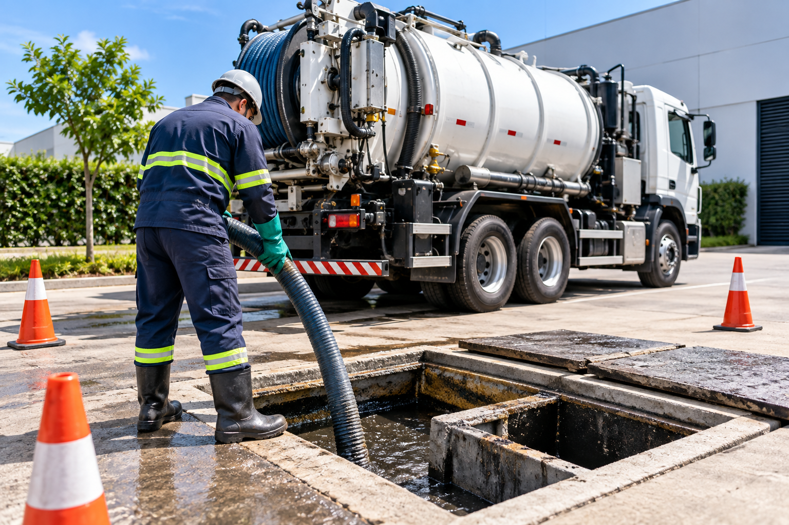
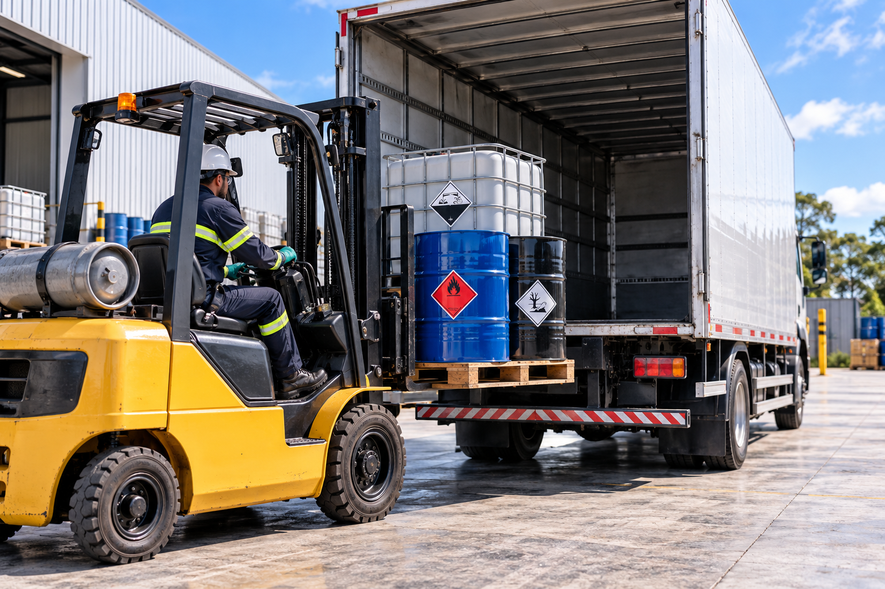
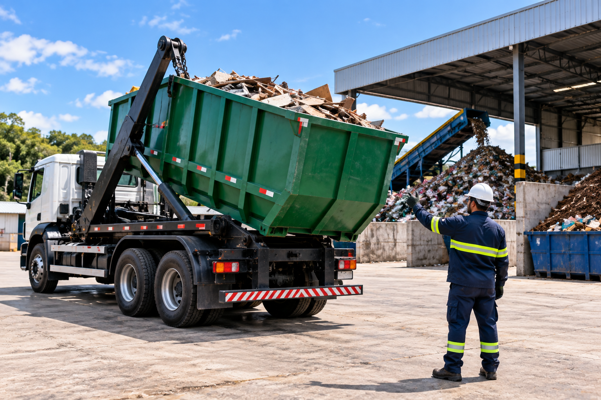

Da necessidade à destinação, estruturamos soluções ambientais adequadas para cada operação.
A Apoio Sustentabilidade conecta planejamento, logística, soluções operacionais, parceiros especializados e acompanhamento documental para atender diferentes demandas empresariais.
Não sabe exatamente qual serviço precisa? Descreva a demanda e ajudamos a estruturar a solução.
Avaliamos as características da operação para estruturar coleta, transporte, acondicionamento, documentação e destinação.
 Industrial
Industrial
Gerenciamento de resíduos gerados em processos industriais e operações empresariais.
Conhecer solução → Perigosos
Perigosos
Soluções para resíduos perigosos que exigem cuidados específicos.
Conhecer solução → Não perigosos
Não perigosos
Alternativas para resíduos não perigosos, recicláveis ou destinados adequadamente.
Conhecer solução → Coleta programada
Coleta programada
Coletas programadas conforme volume, frequência e características da operação.
Conhecer solução → Líquidos
Líquidos
Avaliação de soluções para efluentes, emulsões, lodos e outros resíduos líquidos.
Solicitar avaliação → Logística reversa
Logística reversa
Coleta e direcionamento de equipamentos eletroeletrônicos obsoletos.
Conhecer solução →Da coleta à destinação, estruturamos a operação conforme o tipo de resíduo, volume, frequência e necessidade de cada empresa.

Sucção e transporte de resíduos líquidos, efluentes e lodos.
Conhecer solução →
Limpeza técnica com jato de alta pressão conforme a necessidade da instalação.
Conhecer solução →
Acondicionamento temporário para diferentes tipos e volumes de resíduos.
Conhecer solução →
Organização e acondicionamento de resíduos dentro da operação.
Solicitar avaliação →
Limpeza, sucção e gerenciamento dos resíduos do sistema separador.
Conhecer solução →
Limpeza e sucção conforme as características da instalação.
Conhecer solução →
Planejamento logístico conforme tipo, volume e características da operação.
Conhecer solução →
Tratamento, reciclagem, recuperação ou destinação ambientalmente adequada.
Solicitar avaliação →Fale conosco e receba uma avaliação personalizada para a sua necessidade.
Atuamos no gerenciamento de demandas ambientais empresariais, avaliando o tipo de resíduo, características da operação, necessidade logística, documentação e alternativas de destinação.
Conforme cada projeto, conectamos a operação a parceiros especializados e soluções adequadas, acompanhando o processo desde a necessidade inicial até a destinação.
Um processo simples para entender a necessidade e estruturar a operação.
Identificamos resíduo, quantidade, local, frequência e características da operação.
Avaliamos logística, equipamento, documentação e alternativas disponíveis.
A solução é organizada conforme as necessidades e condições definidas para o atendimento.
Mantemos suporte comercial e documental durante a prestação dos serviços.
Quando houver viabilidade técnica, ambiental e comercial, avaliamos possibilidades de reaproveitamento, reciclagem, recuperação ou valorização dos resíduos.
A documentação aplicável varia conforme o tipo de resíduo, localização e características da operação.
Nossa atuação pode incluir orientação e suporte para documentos relacionados à movimentação e destinação dos resíduos.
Consulte disponibilidade para sua cidade e características específicas da operação.
Informe o resíduo, quantidade, cidade e características da sua operação.